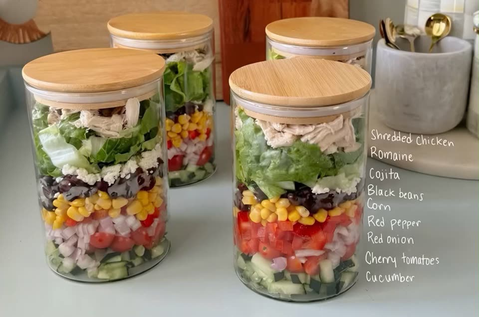

Photorealistic Meal Prep Jars Food Photography
REA-005RealismGPT Image 2by Dua FatimaSeptember

A detailed prompt for generating photorealistic lifestyle food photography featuring layered Mexican-inspired chicken salads in glass jars, optimized for GPT Image 2.
Prompt
Create a photorealistic lifestyle food photography scene featuring four clear glass meal-prep jars arranged on a clean light-colored kitchen countertop. Each jar has a natural bamboo wooden lid with a white sealing ring. The jars contain beautifully layered Mexican-inspired chicken salads, with clearly separated colorful layers from bottom to top: diced cucumber, cherry tomatoes, red onion, red bell pepper, sweet corn, black beans, crumbled Cotija cheese, fresh chopped romaine lettuce, and shredded cooked chicken. Keep every ingredient fresh, vibrant, crisp, and visibly distinct through the transparent glass. Place two jars in the foreground and two slightly behind them for depth and composition. Warm modern kitchen background with subtle wooden cabinets, soft natural daylight coming from a window, shallow depth of field, realistic reflections on the glass, soft shadows, premium food photography, natural colors, high detail, realistic textures, 4K, editorial meal-prep aesthetic. On the right side, include a neat handwritten-style ingredient list reading: “Shredded Chicken Romaine Cojita Black beans Corn Red pepper Red onion Cherry tomatoes Cucumber” Vertical composition, realistic proportions, clean and appetizing presentation, professional commercial food photography.
Tags: product, fashion, 9:16 vertical